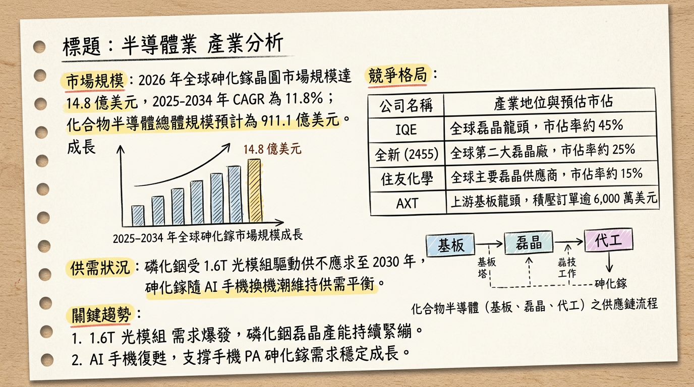
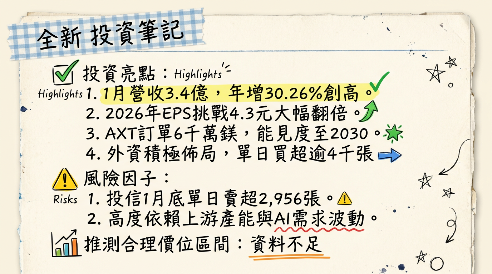

2455全新 全新 深度研究報告
一句話摘要
「AI 光通訊」與「Wi-Fi 7」雙引擎啟動，全新從手機 PA 廠轉型為 1.6T 矽光子關鍵供應商，2026 年獲利預計挑戰歷史巔峰。## 公司概覽
全新光電（VPEC）為全球前二大、台灣第一大的三五族化合物半導體磊晶（Epitaxy）製造商。公司處於產業中游，利用 MOCVD 技術在基板上生長磊晶層，供應給下游 IDM 與代工廠。
【2026 年初營收結構預估】| 業務類別 | 營收佔比 | 核心產品與應用 |
|---|---|---|
| 微電子 (Microelectronics) | 73.5% | 砷化鎵 (GaAs) 磊晶、手機/基地台 PA、Wi-Fi 7 |
| 光電子 (Optoelectronics) | 23.5% | 磷化銦 (InP) 磊晶、800G/1.6T PD、CW Laser、VCSEL |
| 其他/研發收入 | 3.0% | 新技術研發與代工服務 |
核心競爭優勢
財務分析
【近 6 個月月營收趨勢表】| 月份 | 營收金額 (億元) | 月增率 (MoM) | 年增率 (YoY) |
|---|---|---|---|
| 2026/01 | 3.40 | +6.6% | +30.26% |
| 2025/12 | 3.19 | +11.9% | +28.30% |
| 2025/11 | 2.85 | -19.7% | +20.10% |
| 2025/10 | 3.55 | +2.4% | +50.30% |
| 2025/09 | 3.47 | +26.0% | +28.80% |
| 2025/08 | 2.75 | -5.4% | +0.40% |
- 2024 (實際)： 營收 32.41 億元，EPS 3.63 元。
- 2025 (實際)： 營收 33.80 億元，EPS 2.97 元（受上半年基板供給與手機疲軟影響）。
- 2026 (預估)： 營收 44.34 億元，EPS 預估區間 4.30 - 5.49 元。
法說會重點
券商觀點
【券商目標價與評等表】| 券商名稱 | 報告日期 | 評等 | 目標價 | 2026 EPS 預估 |
|---|---|---|---|---|
| FactSet (中位數) | 2026/01/15 | 看多 | 177.5 元 | 5.39 元 |
| 某美系大行 | 2026/01/12 | 看多 | 185.0 元 | 5.49 元 |
| CMoney 法人 | 2026/02/08 | 買進 | N/A | 4.30 元 |
| 某大系券商 | 2025/11/10 | 買進 | 172.0 元 | 5.36 元 |
| 元大投顧 | 2025/08/22 | 買進 | 190.0 元 | N/A |
財報深度分析
【2025 年季度利潤率趨勢表】| 季度 | 毛利率 | 營業利益率 | 稅後淨利率 | 備註 |
|---|---|---|---|---|
| 2025 Q4 | 37.27% | 21.78% | 20.20% | 光電子佔比提升帶動回升 |
| 2025 Q3 | 32.86% | 17.44% | 17.58% | 手機 PA 需求波動影響 |
| 2025 Q2 | ~34.5% | ~18.0% | ~17.0% | 法人估算值 |
| 2025 Q1 | 39.90% | 23.50% | 21.00% | 基期與產品組合優勢 |
- 資本支出： 2025 年中「預付設備款」暴增至 1.1 億元（較 2024 年底 338 萬元成長數十倍），顯示大規模機台採購。
- 存貨分析： 2025 Q3 存貨週轉天數 97.63 天，較 Q2 的 117.63 天大幅改善，去庫存健康。
股權異動
- 可轉換公司債 (CB)： 2025/10/30 決議發行「國內第二次無擔保轉換公司債」，總額 5 億元，主要用於購置機器設備。
- 股利政策： 2026/02/26 董事會決議 2025 年度配發 現金股利 2.65 元。
- 籌碼動向： 外資於 2026/02/26 單日買超 4,332 張，累計三大法人持股比重約 32.82%。
產業分析
【全球三五族磊晶/晶圓競爭格局】| 公司名稱 | 市佔率 (2025 估) | 核心優勢 | 2026 預估 EPS |
|---|---|---|---|
| IQE (英) | ~45% | 全球規模最大，產品線最齊全 | N/A |
| 全新 (台) | ~25% | RF 龍頭，矽光子認證領先 | 4.3 - 5.59 元 |
| 住友 (日) | ~12% | 高階 InP，綁定日系客戶 | N/A |
| 聯亞 (台) | ~5% | 專注矽光子與 1.6T 磊晶 | 4.8 - 5.2 元 |
- GaAs 市場： 預計 2026 年規模達 14.8 億美元，CAGR 11.8%。
- InP 供需： AXT 指出積壓訂單超過 6,000 萬美元，能見度達 2030 年，全新作為中游磊晶廠，議價能力提升。
近期催化劑
- 利多：
2. 1.6T 光模組規格於 2026 年正式量產，ASP（平均售價）大幅提升。
3. Meta/Google AI 眼鏡獨家供貨，進入全面量產期。
- 利空：
2. 傳統手機換機潮若不如預期，可能拖累微電子業務增速。
⭐ 成長動能時間軸
- 2025 Q4： 800G 光通訊 PD/VCSEL 正式量產放量，毛利率落底回升至 37% 以上。
- 2026 Q1： 1.6T 光模組接收端產品獲得美系 CSP 大廠最終認證。
- 2026 Q2： Wi-Fi 7 滲透率突破 40%，帶動手機 PA 需求回升。
- 2026 H2： Meta 與 Google/Samsung AI 眼鏡 進入全面量產期，VCSEL 磊晶出貨爆發。
- 2026 全年： 光電子營收目標較 2024 年翻倍成長，挑戰營收佔比 30%。
2026 展望
- 成長動能： AI 資料中心規格升級（800G -> 1.6T）對磷化銦磊晶的高標準要求，將使全新成為「矽光子」題材下的最大受惠者。此外，XR 穿戴裝置的 VCSEL 需求將開啟第二增長曲線。
- 潛在風險： 需關注新 MOCVD 機台到位後的良率磨合期，以及匯率波動對業外損益之影響。
投資結論
本報告由 AI 自動產生，資料來源為公開網路資訊，僅供參考，不構成投資建議。產生時間：2026-03-01 21:30
📊 資訊卡


